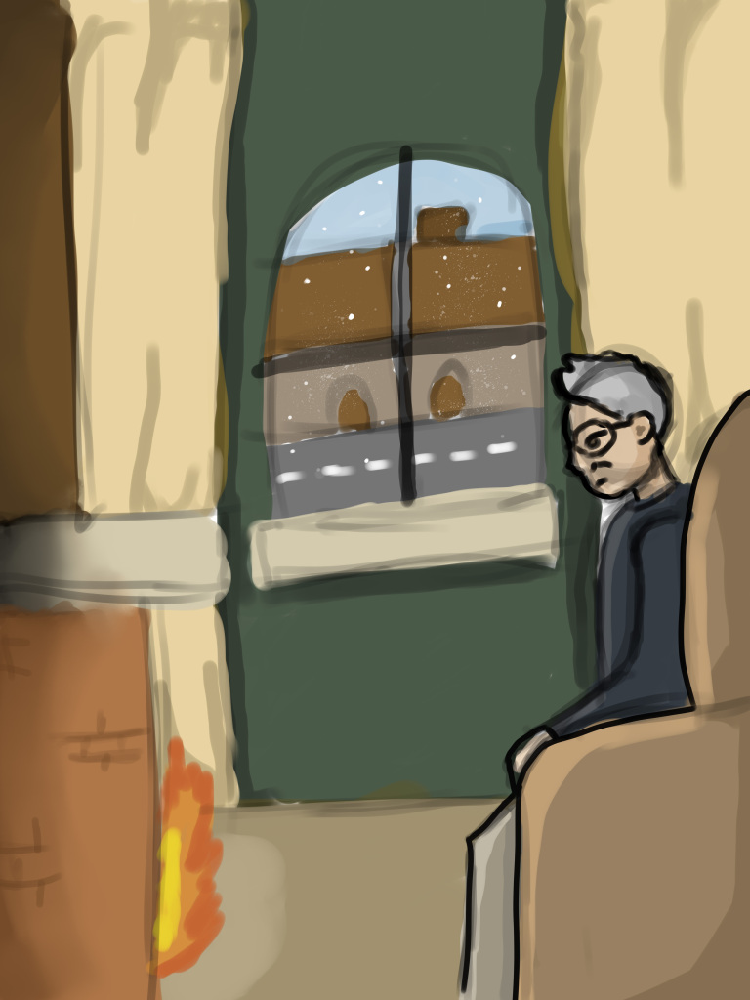
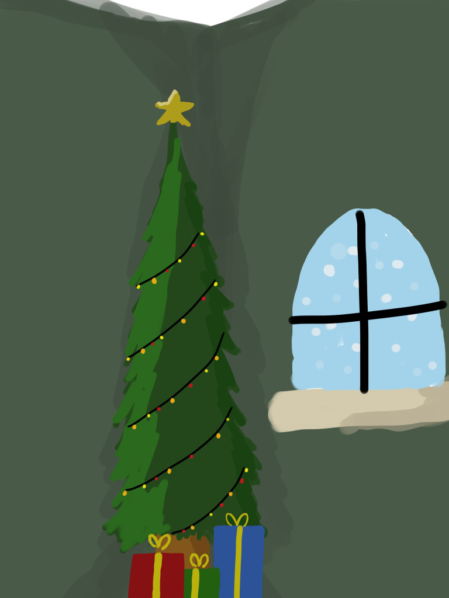
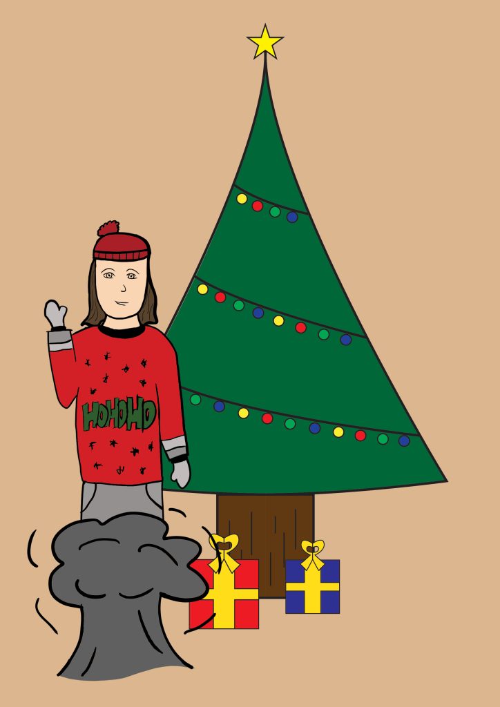
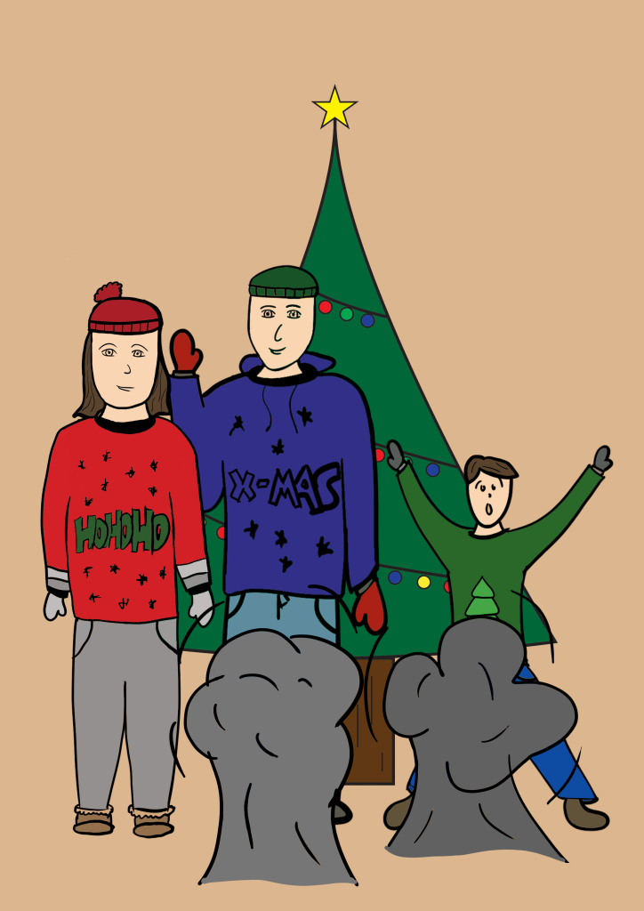
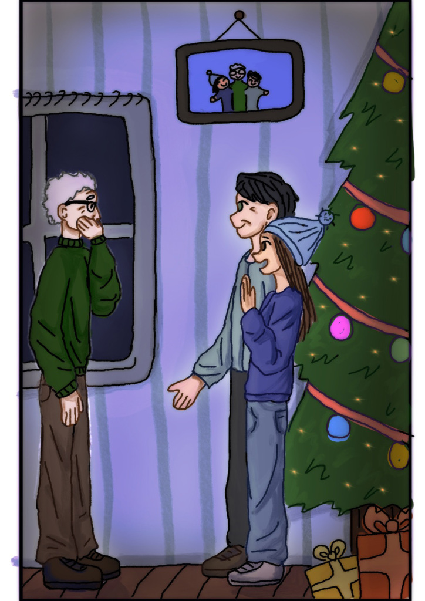
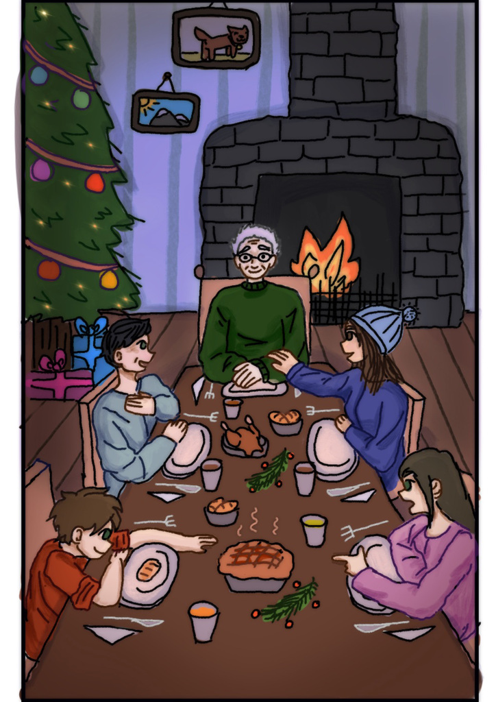

Verhaal 1: Dit is oude man Thomas. Voor het eerst in zijn lange leven viert hij kerst helemaal alleen. De stoel bij de haard lijkt leger dan ooit, en het huis voelt koud en stil. Terwijl hij naar de flikkerende vlammen staart, vult zijn hart zich met gemengde gevoelens van verdriet en herinnering.

Verhaal 2: Thomas staart naar de kerstboom, zijn gedachten afgedwaald naar vroeger. Dan gebeurt er iets vreemds. De cadeautjes onder de boom lijken te bewegen, alsof er leven in zit. Hij wrijft in zijn ogen, maar het gebeurt echt. De stilte van de kamer wordt doorbroken door een magische aanwezigheid.

Verhaal 3: Tot zijn verbazing begint het eerste cadeau te transformeren. Het verandert in een silhouet dat langzaam helderder wordt. Hij herkent haar onmiddellijk: het is zijn dochter. Tranen vullen zijn ogen wanneer het tweede cadeau zich opent en zijn kleinkind verschijnt, gevolgd door het derde cadeau, dat zijn schoonzoon onthult.

Verhaal 4: De kamer, die een paar minuten geleden nog stil en verlaten was, is nu gevuld met geluiden van gelach en warme stemmen. Zijn dochter omhelst hem, en zijn kleinkind springt in zijn armen. Thomas kan het nauwelijks geloven, maar de magie van kerst heeft zijn eenzaamheid veranderd in een moment van vreugde.

Verhaal 5: Terwijl hij met zijn familie geniet van het moment, beseft Thomas dat hij nooit echt alleen was. De herinneringen aan liefde en samenzijn blijven altijd bij hem, zelfs wanneer zijn familie ver weg is. Dit onverwachte bezoek herinnert hem eraan hoe belangrijk het is om verbinding te blijven zoeken.

Verhaal 6: Kerst draait niet alleen om cadeautjes of decoraties, maar om samenzijn, liefde en onverwachte wonderen. Oude man Thomas viert deze kerst omringd door de mensen die hij het meest liefheeft. Het is een kerst die hij nooit meer zal vergeten en die zijn hart vult met nieuwe hoop en vreugde.